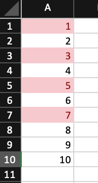

library(openxlsx2)4 Conditional Formatting
wb <- wb_workbook()
negStyle <- create_dxfs_style(font_color = wb_color(hex = "FF9C0006"), bgFill = wb_color(hex = "FFFFC7CE"))
posStyle <- create_dxfs_style(font_color = wb_color(hex = "FF006100"), bgFill = wb_color(hex = "FFC6EFCE"))
wb$styles_mgr$add(negStyle, "negStyle")
wb$styles_mgr$add(posStyle, "posStyle")4.1 Rule applies to all each cell in range

wb$add_worksheet("cellIs")
wb$add_data("cellIs", -5:5)
wb$add_data("cellIs", LETTERS[1:11], startCol = 2)
wb$add_conditional_formatting(
"cellIs",
cols = 1,
rows = 1:11,
rule = "!=0",
style = "negStyle"
)
wb$add_conditional_formatting(
"cellIs",
cols = 1,
rows = 1:11,
rule = "==0",
style = "posStyle"
)4.2 Highlight row dependent on first cell in row

wb$add_worksheet("Moving Row")
wb$add_data("Moving Row", -5:5)
wb$add_data("Moving Row", LETTERS[1:11], startCol = 2)
wb$add_conditional_formatting(
"Moving Row",
cols = 1:2,
rows = 1:11,
rule = "$A1<0",
style = "negStyle"
)
wb$add_conditional_formatting(
"Moving Row",
cols = 1:2,
rows = 1:11,
rule = "$A1>0",
style = "posStyle"
)4.3 Highlight column dependent on first cell in column

wb$add_worksheet("Moving Col")
wb$add_data("Moving Col", -5:5)
wb$add_data("Moving Col", LETTERS[1:11], startCol = 2)
wb$add_conditional_formatting(
"Moving Col",
cols = 1:2,
rows = 1:11,
rule = "A$1<0",
style = "negStyle"
)
wb$add_conditional_formatting(
"Moving Col",
cols = 1:2,
rows = 1:11,
rule = "A$1>0",
style = "posStyle"
)4.4 Highlight entire range cols X rows dependent only on cell A1
wb$add_worksheet("Dependent on")
wb$add_data("Dependent on", -5:5)
wb$add_data("Dependent on", LETTERS[1:11], startCol = 2)
wb$add_conditional_formatting(
"Dependent on",
cols = 1:2,
rows = 1:11,
rule = "$A$1 < 0",
style = "negStyle"
)
wb$add_conditional_formatting(
"Dependent on",
cols = 1:2,
rows = 1:11,
rule = "$A$1>0",
style = "posStyle"
)4.5 Highlight cells in column 1 based on value in column 2
wb$add_data("Dependent on", data.frame(x = 1:10, y = runif(10)), startRow = 15)
wb$add_conditional_formatting(
"Dependent on",
cols = 1,
rows = 16:25,
rule = "B16<0.5",
style = "negStyle"
)
wb$add_conditional_formatting(
"Dependent on",
cols = 1,
rows = 16:25,
rule = "B16>=0.5",
style = "posStyle"
)4.6 Highlight duplicates using default style

wb$add_worksheet("Duplicates")
wb$add_data("Duplicates", sample(LETTERS[1:15], size = 10, replace = TRUE))
wb$add_conditional_formatting(
"Duplicates",
cols = 1,
rows = 1:10,
type = "duplicatedValues"
)4.7 Cells containing text

fn <- function(x) paste(sample(LETTERS, 10), collapse = "-")
wb$add_worksheet("containsText")
wb$add_data("containsText", sapply(1:10, fn))
wb$add_conditional_formatting(
"containsText",
cols = 1,
rows = 1:10,
type = "containsText",
rule = "A"
)
wb$add_worksheet("notcontainsText")4.8 Cells not containing text

fn <- function(x) paste(sample(LETTERS, 10), collapse = "-")
wb$add_data("notcontainsText", sapply(1:10, fn))
wb$add_conditional_formatting(
"notcontainsText",
cols = 1,
rows = 1:10,
type = "notContainsText",
rule = "A"
)4.9 Cells begins with text

fn <- function(x) paste(sample(LETTERS, 10), collapse = "-")
wb$add_worksheet("beginsWith")
wb$add_data("beginsWith", sapply(1:100, fn))
wb$add_conditional_formatting(
"beginsWith",
cols = 1,
rows = 1:100,
type = "beginsWith",
rule = "A"
)4.10 Cells ends with text

fn <- function(x) paste(sample(LETTERS, 10), collapse = "-")
wb$add_worksheet("endsWith")
wb$add_data("endsWith", sapply(1:100, fn))
wb$add_conditional_formatting(
"endsWith",
cols = 1,
rows = 1:100,
type = "endsWith",
rule = "A"
)4.11 Colorscale colors cells based on cell value

df <- read_xlsx("https://github.com/JanMarvin/openxlsx-data/raw/main/readTest.xlsx", sheet = 5)
wb$add_worksheet("colorScale", zoom = 30)
wb$add_data("colorScale", df, colNames = FALSE) ## write data.frameRule is a vector or colors of length 2 or 3 (any hex color or any of colors()). If rule is NULL, min and max of cells is used. Rule must be the same length as style or L.
wb$add_conditional_formatting(
"colorScale",
cols = c(1, ncol(df)),
rows = seq_len(nrow(df)),
style = c("black", "white"),
rule = c(0, 255),
type = "colorScale"
)
wb$set_col_widths("colorScale", cols = seq_along(df), widths = 1.07)
wb$set_row_heights("colorScale", rows = seq_len(nrow(df)), heights = 7.5)4.12 Databars

wb$add_worksheet("databar")
## Databars
wb$add_data("databar", -5:5, startCol = 1)
wb <- wb_add_conditional_formatting(
wb,
"databar",
cols = 1,
rows = 1:11,
type = "dataBar"
) ## Default colors
wb$add_data("databar", -5:5, startCol = 3)
wb <- wb_add_conditional_formatting(
wb,
"databar",
cols = 3,
rows = 1:11,
type = "dataBar",
params = list(
showValue = FALSE,
gradient = FALSE
)
) ## Default colors
wb$add_data("databar", -5:5, startCol = 5)
wb <- wb_add_conditional_formatting(
wb,
"databar",
cols = 5,
rows = 1:11,
type = "dataBar",
style = c("#a6a6a6"),
params = list(showValue = FALSE)
)
wb$add_data("databar", -5:5, startCol = 7)
wb <- wb_add_conditional_formatting(
wb,
"databar",
cols = 7,
rows = 1:11,
type = "dataBar",
style = c("red"),
params = list(
showValue = TRUE,
gradient = FALSE
)
)
# custom color
wb$add_data("databar", -5:5, startCol = 9)
wb <- wb_add_conditional_formatting(
wb,
"databar",
cols = 9,
rows = 1:11,
type = "dataBar",
style = c("#a6a6a6", "#a6a6a6"),
params = list(showValue = TRUE, gradient = FALSE)
)
# with rule
wb$add_data(x = -5:5, startCol = 11)
wb <- wb_add_conditional_formatting(
wb,
"databar",
cols = 11,
rows = 1:11,
type = "dataBar",
rule = c(0, 5),
style = c("#a6a6a6", "#a6a6a6"),
params = list(showValue = TRUE, gradient = FALSE)
)4.13 Between

Highlight cells in interval [-2, 2]
wb$add_worksheet("between")
wb$add_data("between", -5:5)
wb$add_conditional_formatting(
"between",
cols = 1,
rows = 1:11,
type = "between",
rule = c(-2, 2)
)
wb$add_worksheet("topN")4.14 Top N
wb$add_data("topN", data.frame(x = 1:10, y = rnorm(10)))Highlight top 5 values in column x
wb$add_conditional_formatting(
"topN",
cols = 1,
rows = 2:11,
style = "posStyle",
type = "topN",
params = list(rank = 5)
)Highlight top 20 percentage in column y
wb$add_conditional_formatting(
"topN",
cols = 2,
rows = 2:11,
style = "posStyle",
type = "topN",
params = list(rank = 20, percent = TRUE)
)
wb$add_worksheet("bottomN")4.15 Bottom N

wb$add_data("bottomN", data.frame(x = 1:10, y = rnorm(10)))Highlight bottom 5 values in column x
wb$add_conditional_formatting(
"bottomN",
cols = 1,
rows = 2:11,
style = "negStyle",
type = "bottomN",
params = list(rank = 5)
)Highlight bottom 20 percentage in column y
wb$add_conditional_formatting(
"bottomN",
cols = 2,
rows = 2:11,
style = "negStyle",
type = "bottomN",
params = list(rank = 20, percent = TRUE)
)
wb$add_worksheet("logical operators")4.16 Logical Operators

You can use Excels logical Operators
wb$add_data("logical operators", 1:10)
wb$add_conditional_formatting(
"logical operators",
cols = 1,
rows = 1:10,
rule = "OR($A1=1,$A1=3,$A1=5,$A1=7)"
)4.17 (Not) Contains Blanks

wb$add_worksheet("contains blanks")
wb$add_data(x = c(NA, 1, 2, ''), colNames = FALSE, na.strings = NULL)
wb$add_data(x = c(NA, 1, 2, ''), colNames = FALSE, na.strings = NULL, startCol = 2)
wb$add_conditional_formatting(cols = 1, rows = 1:4, type = "containsBlanks")
wb$add_conditional_formatting(cols = 2, rows = 1:4, type = "notContainsBlanks")4.18 (Not) Contains Errors

wb$add_worksheet("contains errors")
wb$add_data(x = c(1, NaN), colNames = FALSE)
wb$add_data(x = c(1, NaN), colNames = FALSE, startCol = 2)
wb$add_conditional_formatting(cols = 1, rows = 1:3, type = "containsErrors")
wb$add_conditional_formatting(cols = 2, rows = 1:3, type = "notContainsErrors")4.19 Iconset

wb$add_worksheet("iconset")
wb$add_data(x = c(100, 50, 30), colNames = FALSE)
wb$add_conditional_formatting(
cols = 1,
rows = 1:6,
rule = c(-67, -33, 0, 33, 67),
type = "iconSet",
params = list(
percent = FALSE,
iconSet = "5Arrows",
reverse = TRUE)
)4.20 Unique Values
wb$add_worksheet("unique values")
wb$add_data(x = c(1:4, 1:2), colNames = FALSE)
wb$add_conditional_formatting(cols = 1, rows = 1:6, type = "uniqueValues")4.21 Sparklines
sl <- create_sparklines("Sheet 1", "A3:K3", "L3")
wb <- wb_workbook() %>%
wb_add_worksheet() %>%
wb_add_data(x = mtcars) %>%
wb_add_sparklines(sparklines = sl)